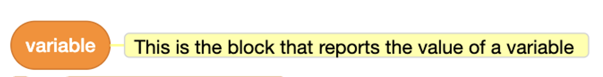
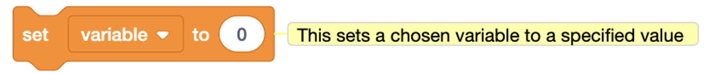
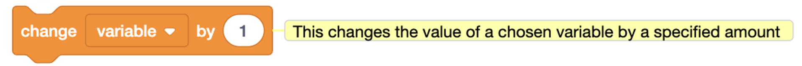
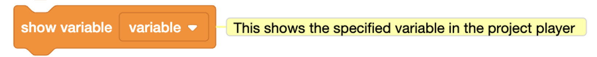
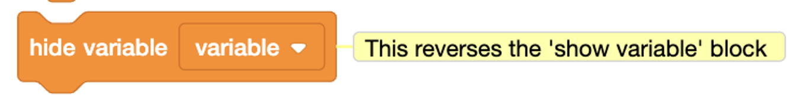

Scratch 1 Class - Guided Exercise
Lesson 7 Guide - Variables and Parameters
Vocabulary:
- Variable: Think of a variable like a "box" that you can put anything into. It can store numbers, words, or even the score of a game. This box can be opened, and its contents can be changed at any time. For example, if the box is named "Score," you can put a number in it that represents the player's score, and then change it whenever the player earns or loses points.
- Parameter: A parameter is like a placeholder in a block that can hold different values each time the block is used. In Scratch, round blocks represent parameters. For example, a "pick random" block is a parameter that picks a random number between two values you set. It's like asking, "What number should I use here?" and Scratch answers with a random number.
Blocks Used/Introduced Today:
-

Make a Variable: This block creates a new "box" (variable) that you can name. You can use this box to store any value, like the score in a game or the number of lives left.
-

Set [Variable] to [Value]: This block tells Scratch to put something into your "box." For example, you can set the score to 0 at the beginning of a game.
-

Change [Variable] by [Value]: This block changes the value in your box by a certain amount. For example, you can add 1 to the score every time the player collects a coin.
-

Show Variable: This block lets you decide whether the "box" (variable) is visible on the screen. For example, you can choose to show the score to the player.
-

Hide Variable: This block lets you decide whether the "box" (variable) is not visible on the screen. For example, you can choose to hide the score to the player after they die.
-

Pick Random [1 to 10]: This block is like rolling a die; it picks a random number between two values you set. It's useful for creating surprise elements in your game, like randomly placing objects.
-

Timer: This block keeps track of time. It's like a stopwatch that starts as soon as your project begins. You can use it to make things happen after a certain amount of time or to create timed challenges.
-

Ask [What’s Your Name?] and Wait: This block is like asking a question and waiting for the answer. It's great for getting input from the player, like asking them to enter their name.
Exercise 1: Understanding Variables
In this exercise, you will learn what variables are and how to use them in Scratch.
Imagine you have a box where you can store anything you want: a number, a word, or even your score in a game. This box is what we call a variable in coding.
Step 1: Creating Your First Variable
Let's start by creating a variable. In Scratch, go to the orange "Variables" section and click "Make a Variable." Name your variable "Score."

Step 2: Setting the Initial Value
Once you've created the "Score" variable, let's set its value. Drag the block "Set [Score] to [0]" into your workspace. This block puts the number 0 into your "Score" box, so your game starts with a score of 0.

Step 3: Changing the Variable
Now, let's make the score go up when something good happens in the game. Drag the block "Change [Score] by [1]" into your workspace. This block will add 1 to the score every time it runs.

Step 4: Showing the Variable on the Screen
If you want players to see their score, use the "Show Variable [Score]" block. This will display the score on the screen while your game is running.

Example: Let's say you're making a game where a cat collects coins. Every time the cat touches a coin, the score goes up by 1. You can use the blocks you've learned to create this functionality:
- Start with "Set [Score] to [0]" to initialize the score at the beginning of the game.
- Then, use "Change [Score] by [1]" every time the cat touches a coin.
- Finally, use "Show Variable [Score]" to display the score on the screen for the player to see.
Now that you've created and used a variable, you can use them to keep track of anything in your game: the number of lives left, the time remaining, or anything else you can think of!
Exercise 2: Exploring Parameters
In this exercise, you will learn what parameters are and how to use them in Scratch.
What is a Parameter?
Think of a parameter as a placeholder or a blank space that you can fill in with a specific value. It's like having a blank form that you can complete with different information every time you use it.
In Scratch, parameters are often represented by round or oval blocks that fit into other blocks. These parameters can change how a block behaves, depending on what value you give them.
Common Parameter Blocks in Scratch
-
Pick Random [1] to [10]
This block generates a random number between the two values you specify. For example, "Pick Random [1] to [10]" might give you any number between 1 and 10 each time it's used.
Example: Use this block to make a sprite move a random number of steps each time the green flag is clicked.
-
Timer
The "Timer" block keeps track of how much time has passed since the project started. You can use it to create time-based events in your game.
Example: Use the Timer to make something happen after a certain amount of time, like ending the game after 30 seconds.
-
Mouse X / Mouse Y
These blocks return the current X or Y position of the mouse pointer on the screen. You can use these to make a sprite follow the mouse or interact with it.

Example: Use "Mouse X" and "Mouse Y" to make a sprite move to the mouse pointer's location.
Activity: Create a Simple Random Movement
Let's use what we've learned to create a simple program that makes a sprite move randomly on the stage.
- Drag the "When Green Flag Clicked" block to start your program.
- Add the "Forever" loop so the movement continues endlessly.
- Inside the loop, use the "Move [10] Steps" block, but replace the number with "Pick Random [5] to [15]" to make the sprite move a random number of steps each time.
- Test your program to see the sprite move randomly on the stage.
Now that you understand parameters, you can use them to create dynamic and interesting interactions in your Scratch projects!
Homework and Practice Exercises:
-
Exercise 1: Create a Scorekeeper
- Create a variable called "Score". Set it to 0 at the start of your program.
- Use the "Change [Score] by [1]" block to increase the score every time the sprite touches a specific color or object.
- Display the score on the screen, and make sure it updates each time the score changes.
-
Exercise 2: Random Movement Game
- Use the "Pick Random [1] to [10]" block to control the movement of a sprite. The sprite should move a random number of steps in a random direction each time the green flag is clicked.
- Add a timer to limit how long the game lasts. Use the "Timer" block to stop the game after 30 seconds.
- Keep track of how many times the sprite hits the edge of the screen using a variable called "Hits". Display the hits on the screen.
-
Exercise 3: Interactive Quiz
- Create a simple quiz using variables to store the user's answers.
- Ask the user a series of questions, and store their responses in variables like "Answer1," "Answer2," etc.
- Use the "If Else" conditional blocks to check if the answers are correct, and increase the score accordingly.
- At the end of the quiz, display the user's score using the "Score" variable.
-
Exercise 4: Custom Timer
- Create a timer that counts down from a specified number of seconds. Display the remaining time on the screen.
- Use the "Timer" block to decrease the timer by 1 each second.
- When the timer reaches 0, make the sprite say "Time's Up!" and stop all scripts.
-
Challenge: Parameterized Drawing
- Use the "Pick Random" block to create a drawing program where the sprite draws random shapes on the screen.
- Use parameters to control the size, color, and number of sides of the shapes.
- Experiment with different shapes and patterns to create a unique artwork.